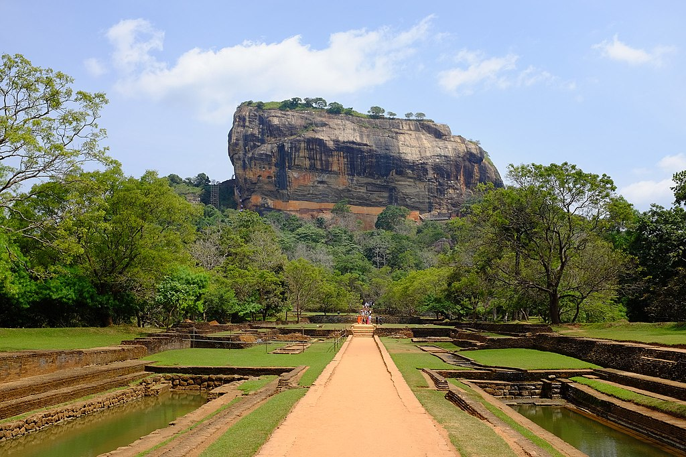
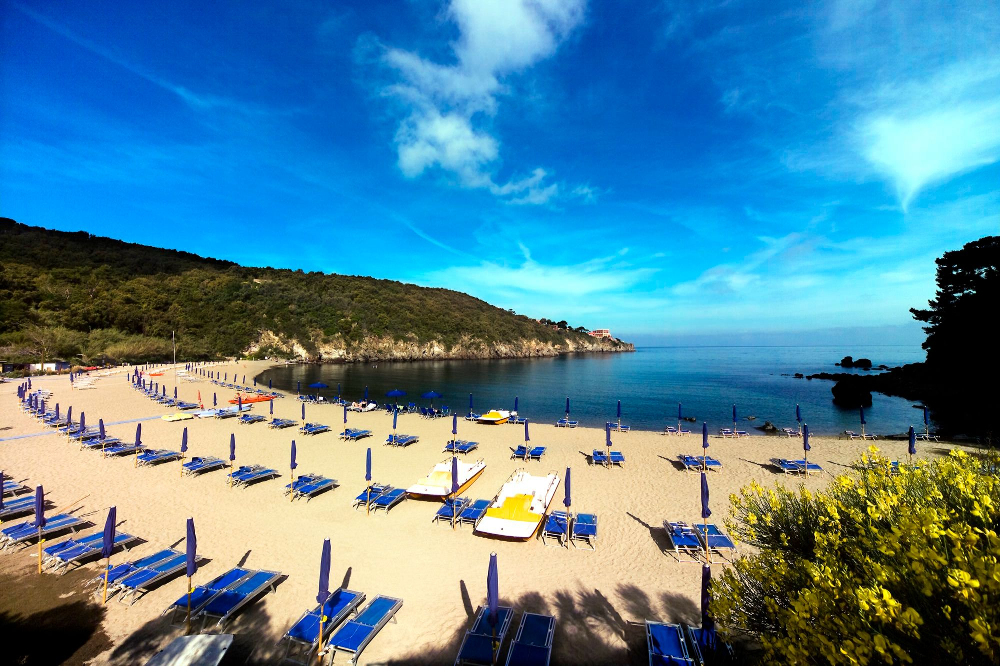
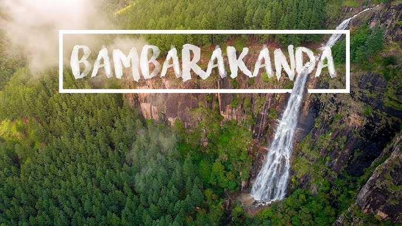
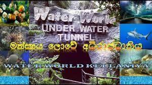
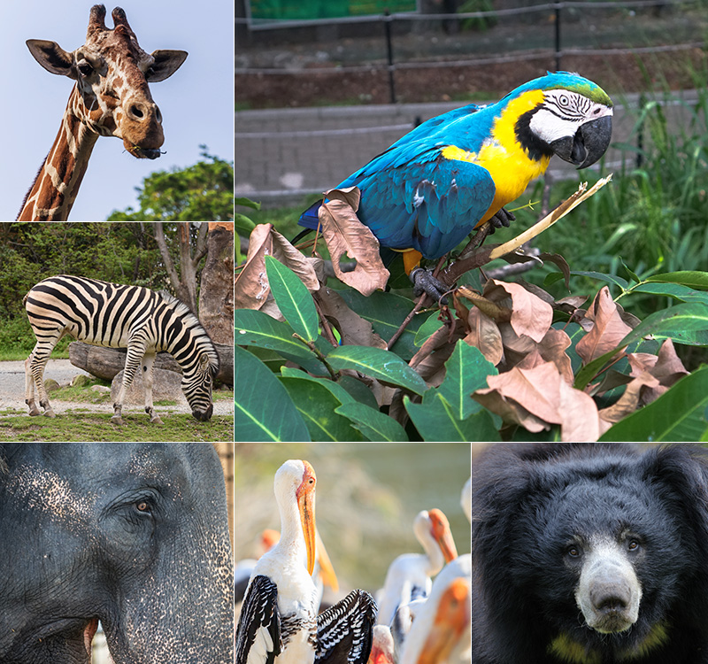
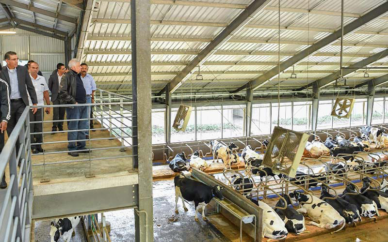

HOME
About
contact
1. Polonnaruwa travel - Sri Lanka,Asia.
Country - Sri Lanka.
Province - North Central Province.
Coordinates - 7°56′N 81°0′E.
Area - 3,293 km².
Polonnaruwa - Before 1070 AD.
Website - https://www.polonnaruwa.dist.gov.lk

Kings ruled the central plains of Sri Lanka from Polonnaruwa 800 years ago, when it was a thriving commercial and religious center. The glories of that age can be found in the archaeological treasures that still give a pretty good idea of how the city looked in its heyday. You'll find the archaeological park a delight to explore, with hundreds of ancient structures – tombs and temples, statues and stupas – in a compact core. The Quadrangle alone is worth the trip.
2. SIGIRIYA SRI LANKA.
Location-Central province,Sri Lanka.
Coordinate-07°57′25″N 80°45′35″E.
Elevation-349m(1,145 ft).
Built for- King Kashyapa of Sri Lanka.
Visitors-1 million.
Governing body- Government of Sri Lanka.

Sigiriya rock plateau, formed from the magma of an extinct volcano, is 200 meters higher than the surrounding jungles. Its view astonishes the visitors with the unique harmony between nature and human imagination.
The fortress complex includes remnants of a ruined palace, surrounded by an extensive network of fortifications, vast gardens, ponds, canals, alleys, and fountains.
The surrounding territories of Sigiriya were inhibited for several thousand years. Since the 3rd century BC, the rocky plateau of Sigiriya has served as a monastery. In the second half of the 5th-century king, Kasyapa constructed a royal residence here.
After his death, Sigiriya again became a Buddhist monastery until the 14th century, when it was abandoned.
The main entrance is located on the northern side of the rock. It was designed as a huge stone lion whose feet have survived until today, but the upper parts of the body were destroyed.
Thanks to this lion, the palace was named Sigiriya. The term Sigiriya originates from the word Sihagri, i.e., Lion Rock.
The western wall of Sigiriya was almost entirely covered by frescoes created during the reign of Kasyapa. Eighteen frescoes have survived to this day.
Sigiriya frescoes depict nude females and are considered to be either portraits of Kadapa’s wives and concubines or priestesses performing religious rituals. Despite the unknown identity of the females depicted in the frescoes, these unique ancient paintings celebrate female beauty and have incredible historical significance.
One of the most striking features of Sigiriya is its Mirror wall. In the old days, it was polished so thoroughly that the king could see his reflection. The Mirror wall is painted with inscriptions and poems written by the visitors of Sigiriya.
The most ancient inscriptions are dated from the 8th century. These inscriptions prove that Sigiriya was a tourist destination over a thousand years ago. Today, painting on the wall is strictly prohibited
Sigiriya or Sinhagiri is an ancient rock fortress located in the northern Matale District near the town of Dambulla in the Central Province, Sri Lanka. It is a site of historical and archaeological significance that is dominated by a massive column of granite approximately 180 m high
3. Hikkaduwa Beach.
District: Galle District.
Province: Southern Province.
Postal Code: 80240.

Hikkaduwa is a seaside resort town in southwestern Sri Lanka. It’s known for its strong surf and beaches, including palm-dotted Hikkaduwa Beach, lined with restaurants and bars. The shallow waters opposite Hikkaduwa Beach shelter the Hikkaduwa National Park, which is a coral sanctuary and home to marine turtles and exotic fish. Inland, Gangarama Maha Vihara is a Buddhist temple decorated with hand-painted murals.
4. Sinharaja Forest Reserve.
Location - Sabaragamuwa and Southern Provinces, Sri Lanka.
Nearest city - Rakwana.
Coordinates - 6°25′00″N 80°30′00″.
Area - 88.64 km2 (34.22 sq mi).
Established - April, 1978.

Sinharaja is a Rain Forest and a biodiversity hotspot which is located in south west lowland wet zone within Sabaragamu and Southern provinces of Sri Lanka. Sinharaja rain forest is the country’s last viable area of primary tropical rain forest. It covers an area of 11,000 Ha of primary and secondary forests. This narrow strip of rolling site comprises of a series of ridges and valleys. More than 60% of the trees are endemic to Sinharaja Forest and many of them are considered rare. There is much endemic wildlife, especially birds but the reserve is also home to over 50% of Sri Lanka’s endemic species of butterflies & mammals and also many kinds of insects, reptiles and rare amphibians. This is one of the main reasons that UNESCO declared Sinharaja Forest as a UNESCO World Heritage in 1988 under the name of Sinharaja Forest Reserve. In 1936 Sinharaja Forest was first recognized as being the only considerable patch of virgin tropical rain forest in the Island.
Sinharaja forest was accepted by UNESCO as a biosphere reserve in 1978. Recognizing the need for maximum possible 4 protection the site in near declared as a National Heritage Wilderness Area. Being the habitat for rare and endangered species and an outstanding site for study of the process of biological evolution. Sinharaja Forest is the best place to watch mixed species bird flocks. According to a study carried out on the mixed species bird flocks, 42 individual birds occur in the flocks on average which makes this the world’s largest mixed species bird flock. The mixed species Bird flock study of Sinharaja forest has been continuing since 1981 and is considered as the World’s longest bird flock study.
5. Narangala Mountain,Badulla,Sri Lanka.
Location -UVA Province,Badulla.

Beautiful Narangala, with its golden grass, rises up to a height of over 1500m in the Uva Province of Sri Lanka. The summit of this second highest mountain in Uva, provides some of the very best views in the entire tropical island. In addition to it; the reasonable challenge that climbing it offers has made it a great favorite amongst hikers.
Hiking Spot: Narangala Peak
Height: 1527m
Difficulty Level: Medium
Things to wear: Hiking boots with a good grip, warm clothing
Things to take: Water bottle, energy bars, bug repellant
Route Description:
The hiking trail starts in the Thangamalai Estate area. The name literally means ‘Golden Mountain’ in Tamil and is derived from the golden grasses that blanket the slopes of Narangala. One of the most defining features of Narangala is its sharply rectangular peak making it quite an attractive sight even from the far distance.
Hikers should stop their vehicles at the Hindu Temple in the estate. If you have no guide with you, some of the locals will be happy to help direct. You will have to climb along little foot trails in the tea estate until you find a large pipe line that supplies water to the estate. You will then follow the pipe until the point hat it reaches a road that runs through the estate. There will be many pretty views of slopes coated in the bright green of tea trees; that you can take photographs of. After following the estate road for a while you will reach the point from which you start the climb up the mountain.
The initial portion of the climb will be through a grove of turpentine trees. The leaf fall from these trees are very slippery; which added to the slope of the ground makes footing quite treacherous. The hike through the yellow gold grasses of Narangala’s slopes are idyllic though,
making up for the difficulty in getting to them. There are occasional wildlife and their tracks to be seen; so go about without disturbing them. You will traverse four of the lower peaks of Narangala, all with great views, before reaching the summit.
The vista that spreads before you will be jaw-dropping. You will be able to see between the valleys of the rivers of Uma Oya, Badulu Oya and Loggal Oya; while getting an eagle’s eye view of the Mahaweli flood plains extending all the way up to Trincomalee. Also to be seen are the far away Kehelpathdoruwa and Yahanagala mountains; Nayabedda Range, Madulsima Range and Poonagala Range; the Idalgasinna Gap and Haputale Gap; the slopes of Randenigala and rolling green of Horton Plains. The giant of the Namunakula Range of mountains lies much closer; with many other places to see and identify. These beautiful landscapes spread from the summit in colorful panorama; the likes of which are only seen in paintings.
The summit itself has a flat area where you can rest and refresh before starting down. But make sure you don’t litter. The entire hike will take between six to eight hours depending on how experienced you are and how you pace yourself.
6. Bomburu Ella Waterfall.
Location -Perawella,Sri lanka.
Coordinates - 6°56′51″N 80°49′51″E.

Bomburu Ella, also known as Perawella Falls, is a waterfall at Uva-Paranagama Divisional Secretariat of Sri Lanka. It is located near the border of Nuwara Eliya and Badulla districts, approximately 15 km from Welimada town.
7. Nuwara Eliya.
Elevation: 1,884 m.
Area code: 052.
District: Nuwara Eliya District.
Province: Central Province.

Nuwara Eliya is a city in the tea country hills of central Sri Lanka. The naturally landscaped Hakgala Botanical Gardens displays roses and tree ferns, and shelters monkeys and blue magpies. Nearby Seetha Amman Temple, a colorful Hindu shrine, is decorated with religious figures. Densely forested Galway's Land National Park is a sanctuary for endemic and migratory bird species, including bulbuls and flycatchers.
8.Adisham Bungalow (St.Benedict's Monastery).
Country: Sri Lanka.
Town or city: Haputale.
Former names: Adisham Hall.
Architectural style: Tudor and Jacabian.
Alternative names: St Benedict's Monastery.
Location: Haputale, Sri Lanka.
Addres: St. Benedict's Monastery, Adisham, Haputhale, Sri Lanka.
Elevation: 5,000 feet above sea level.
Current tenants: St. Benedict's Monastery.
Construction started: 1927.
Completed: 1931.
Client: Sir Thomas Villiers.
Landlord: Sylvestro Benedictine Congregation of Sri Lanka.

Sir Thomas Villiers was awarded 2.8 ha (7 acres) from the Tangamale Strict Nature Reserve by an act of the British parliament. The house was built in 1931 by an English aristocrat and planter Sir Thomas Villiers, former chairman of George Steuart Co, a trading and estate agency based in Colombo. Sir Thomas was a grandson of Lord John Russell and descendant of the Dukes of Bedford. Named after Adisham, it was designed by R. Booth and F. Webster in Tudor and Jacobean style. Adisham Hall played host to many prominent personalities of the colony until the retirement of Sir Thomas, after which it was purchased by Don Charles Wijewardene and his daughter Rukmini Wijewardene, owners of Sedawatte Estates, in 1950. While studying at LSE, London, Rukmini Wijewardene, in order to thank him for the sale, made a courtesy call on Sir Thomas Villiers who was, by then, living in Knightsbridge, London. Don Charles and Rukmini were the husband and daughter of Vimala Wijewardene. In 1961 Rukmini Beligammana (née Wijewardene) sold it to an Italian Benedictan monk. Upon purchasing the house and property the Italian monk removed silver cutlery and a few items of furniture in order to recover his investment and also make a profit. After leaving it unoccupied for two years he subsequently donated the house and property to the Ampitiya Benedictine Monastery in 1963. The house is well preserved along with its period fittings and furniture, and is open to visitors.
9.Galle.
Country: Sri Lanka.
District: Nuwara Galle District.
Province: Southern Province.
Elevation: 0 m (0 ft).
Area code: 091.

Galle is a city on the southwest coast of Sri Lanka. It’s known for Galle Fort, the fortified old city founded by Portuguese colonists in the 16th century. Stone sea walls, expanded by the Dutch, encircle car-free streets with architecture reflecting Portuguese, Dutch and British rule. Notable buildings include the 18th-century Dutch Reformed Church. Galle Lighthouse stands on the fort’s southeast tip.
10.Negombo Beach.
Country: Sri Lanka.
Province: Western Province.
District: Gampaha.
Division: Negombo.
Elevation: 2 m (7 ft).
Postal code: 11500.
Area code: 031.

With a wide sandy beach, big hotels, and handy proximity to Colombo, Negombo is one of Sri Lanka’s most popular resorts. Beyond its sands lies an interesting mix: a colonial-built canal and crumbled fort; a lively fish market, traditional fishing communities, and a wildlife-rich lagoon.
11.Sri Dalada Maligawa.
Country: Sri Lanka.
Province: Central Province.
Address: Kandy.
Construction started: 1592.
Opened: 1595.
Founder: Vimaladharmasuriya I.
Function: Temple.
Geographic coordinates: 7°17′37″N 80°38′29″E / 7.29361°N 80.64139°E.
Phone: 0812 234 226.
.jpg)
Sri Dalada Maligawa[a], commonly known in English as the Temple of the Sacred Tooth Relic, is a Buddhist temple in Kandy, Sri Lanka. It is located in the Royal Palace Complex of the former Kingdom of Kandy, which houses the relic of the tooth of the Buddha. Since ancient times, the relic has played an important role in local politics because it is believed that whoever holds the relic holds the governance of the country. The relic was historically held by Sinhalese kings. The Temple of the Tooth is a World Heritage Site mainly due to the temple and the relic.
Bhikkhus of the two particular chapters, the Malwathu chapters and Asgiri chapters, conduct daily worship in the inner chamber of the temple. Rituals are performed three times daily: at dawn, at noon and in the evenings. On Wednesdays, there is a symbolic bathing of the relic with a herbal preparation made from scented water and fragrant flowers called Nanumura Mangallaya; this holy water is believed to contain healing powers and is distributed to those present.
The temple sustained damage from bombings by Janatha Vimukthi Peramuna in 1989, and by the Liberation Tigers of Tamil Eelam in 1998. It was fully restored each time.
12.Bambarakanda Falls.
Country: Sri Lanka.
Province -UVA Province.
Address: Kalupahana - Ohiya Rd.
Coordinates: 6°46′24″N 80°49′52″E / 6.77333°N 80.83111°E.
Elevation: ≈1,100 m (3,600 ft).
Number of drops: 1.
World height ranking: 461st.

Bambarakanda Falls (also known as Bambarakele Falls) is the tallest waterfall in Sri Lanka. With a height of 263 m (863 ft), it ranks as the 461st highest waterfall in the world. Situated in Kalupahana in the Badulla District, this waterfall is 5 km (3.1 mi) away from the A4 Highway. The waterfall was formed by Kuda Oya, which is a tributary of the Walawe River. The Bambarakanda Falls can be found in a forest of pine trees.
13.Mount Lavinia Beach.
Country: Sri Lanka.
Province: Western Province.
Located in: Lavinia Restaurant Mount Lavinia Beach.
Address: Beach, Dehiwala-Mount Lavinia 10370.
.jpg)
"Mount Lavinia Beach in Sri Lanka is a main sea-bathing spot in the island. Here, depending on season, the waves can be swimmable and it's host to some amazing sunsets. Mt Lavinia beach offering a stretch of sand, waves, lifeguards, hotels & nearby restaurants. It is always advised that people swim near groups and always keep a close eye on children (and pets). If you’re just wading up to your hips and building sand castles, however, Mount Beach is fine. And if you like to stay long enough around 6 PM you cab view some amazing sunsets in the Western Indian ocean."
14.Water World Public Aquarium.
Country: Sri Lanka.
Province: Western Province.
Address: 95 Biyagama Rd, Gonawala.
Phone: 0112 269 226.

"Welcome to Water World Kelaniya, the only public aquarium in Sri Lanka! Located on a scenic 5 acre property on the banks of the Kelani River, Water World is an aquatic wonderland which is home to a diverse collection of over 500 varieties of fish. Water World also houses SOUTH ASIA’S FIRST under water tunnel and the WORLD’S FIRST aviary river safari."
15.Dehiwala Zoological Gardens.
Country: Sri Lanka.
Province: Western Province.
Address: 120 Galvihara Rd, Dehiwala-Mount Lavinia.
Notable animals: Sanju, Joe, Tony, Bandula.
Opened: 1936.
Number of animals: 3,000.
Land area: 10.1 ha / 0.10 km2.
No. of species: 310 (2013).
Annual visitors: ~1.5 million (2008).
Major exhibits: Mammals, reptiles, aquatic animals, birds.
Phone: 0112 712 751.

National Zoological Gardens of Sri Lanka is a zoological garden in Dehiwala, Sri Lanka, founded in 1936. It is home to various birds, mammals, reptiles, fish and amphibians. The zoo not only exhibits animals from Sri Lanka, but also from across Asia and other parts of the globe.
16.Horton Plains National Park
Country: Sri Lanka.
Country: Sri Lanka.
Location Central province, Sri Lanka.
Nearest city Ohiya and Nuwara Eliya.
Coordinates 6°48′N 80°48′E.
Area 3,160 ha (12.2 sq mi).
Established 1969 (Nature reserve)
1988 (National park).
World Heritage site 2010 (within the site Central Highlands of Sri Lanka).

Horton Plains National Park (Sinhala: හෝර්ටන් තැන්න ජාතික උද්යානය, romanized: Hortan Thanna Jathika Udyanaya) is a national park in the central highlands of Sri Lanka that was designated in 1988. It covers an area of 31km² and borders Thotupalakanda Nature Reserve. It is located at an elevation of 2,100–2,300 m (6,900–7,500 ft) and encompasses montane grassland and cloud fores. Temperature fluctuates between 0'C and 27'C. It is rich in biodiversity and many species found here are endemic to the region.
The Horton Plains are the headwaters of three major Sri Lankan rivers, the Mahaweli, Kelani, and Walawe. In Sinhala the plains are known as Maha Eliya Plains (මහ එළිය තැන්න). Stone tools dating back to Balangoda culture have been found here. The plains' vegetation is grasslands interspersed with montane forest and includes many endemic woody plants. Large herds of Sri Lankan sambar deer feature as typical mammals and the park is also an Important Bird Area with many species not only endemic to Sri Lanka but restricted to the Horton Plains. Forest dieback is one of the major threats to the park and some studies suggest that it is caused by a natural phenomenon.
The sheer precipice of World's End and Baker's Falls are among the tourist attractions of the park.
17.Ambewela Farm.
Country: Sri Lanka.
Location Central province, Sri Lanka.
Address: VQ9W+P72, New Zealand Farms Road, Ambewela.

LMF currently operates two of Sri Lanka’s largest dairy farms. They are situated in the beautiful town of Nuwera Eliya and are adorned with lush green grass of the highest quality. Their location at an altitude of 6000 feet from sea level provides ideal conditions for the raring of the best breeds of cattle in the world. The two farms extend across 1500 acres and houses over 2000 heads of cattle. Globally beloved dairy products including Ambewela Fresh Milk, Ambewela Yogurt and Ambewela Cheese are all produced within these farms. The high-end technology used within the farms ensures that LMF meets dairy requirements of the Sri Lankan market while maintaining high standards.
***whether you're a local rediscovering the beauty of you homeland or a traveler eager to explore somewhere new,Sri Lanka Welcomes you with open arms.from its sun-kissed beaches to misty mountain tops , ancient temples to bustling cities,every corner has a story to tell.so come,see,and experience the wonder for yourself-Sri Lanka is waiting...***